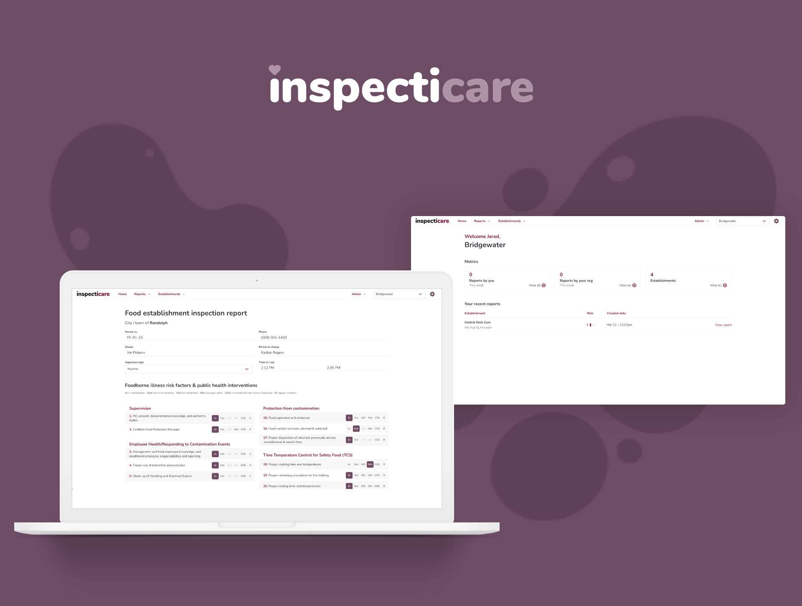
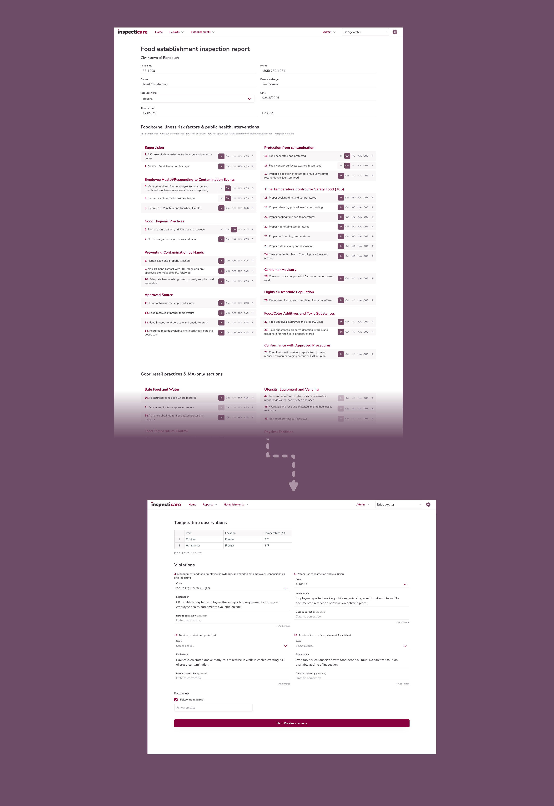
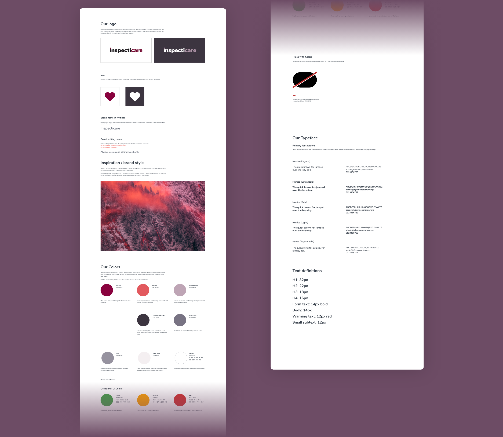
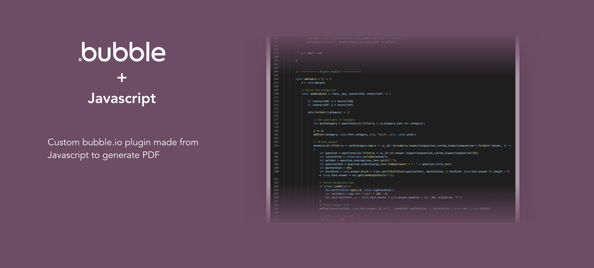

Inspecticare
2023 · Co-Founder · Product Strategy · Full-Stack Development
Inspecticare is a municipal SaaS platform that modernizes health inspections for food establishments. It
replaces paper forms with structured digital reporting, making inspections faster to complete, easier to
follow, and better organized.
As co-founder, I led product discovery, defined the system architecture, designed the UX and brand, and
built the full application. The platform is currently used by municipalities in Massachusetts.

Context
Problem
Health inspections in many municipalities relied on paper forms and manual reporting. Inspectors often depended on memory to recall required codes and procedural steps, leading to inconsistent documentation and missed information. Records were difficult to retrieve, inconsistently formatted, and frequently stored physically, creating administrative burden and long-term tracking challenges.
Solution & impact
Inspecticare replaces paper inspections with structured, guided digital reports.
Inspectors complete reports in the field through a step-by-step
workflow that ensures required information is captured consistently, while compliant
documentation is generated and stored automatically.
Thousands of inspections have been completed through the platform, helping towns improve
documentation reliability, reduce onboarding friction for new inspectors, and modernize
long-term record management.
The Origin
Inspecticare began after seeing how health inspections were conducted: paper-based,
highly manual, and heavily dependent on inspector memory. New inspectors faced a steep learning
curve, needing to recall codes, procedural steps, and formatting requirements while completing
reports in the field.
Rather than simply digitizing paperwork, the goal became clearer:
What if inspections were guided instead of memorized?
Designing the Guided Workflow
The interface was designed as a structured walkthrough rather than a static form. Each section
breaks inspections into clear, digestible steps, reducing reliance on memory and minimizing the risk
of missed information.
By embedding health codes and required inputs directly into the workflow, the system shifts
cognitive load away from the inspector and into the product.

Establishing the Brand System
The visual system needed to feel modern without appearing informal. For municipalities, credibility matters as much as usability.

From Guided Input to Official Record
The structured workflow feeds directly into dynamically generated PDF reports. A custom JavaScript plugin was developed to transform inspection data into compliant, standardized documentation automatically.
